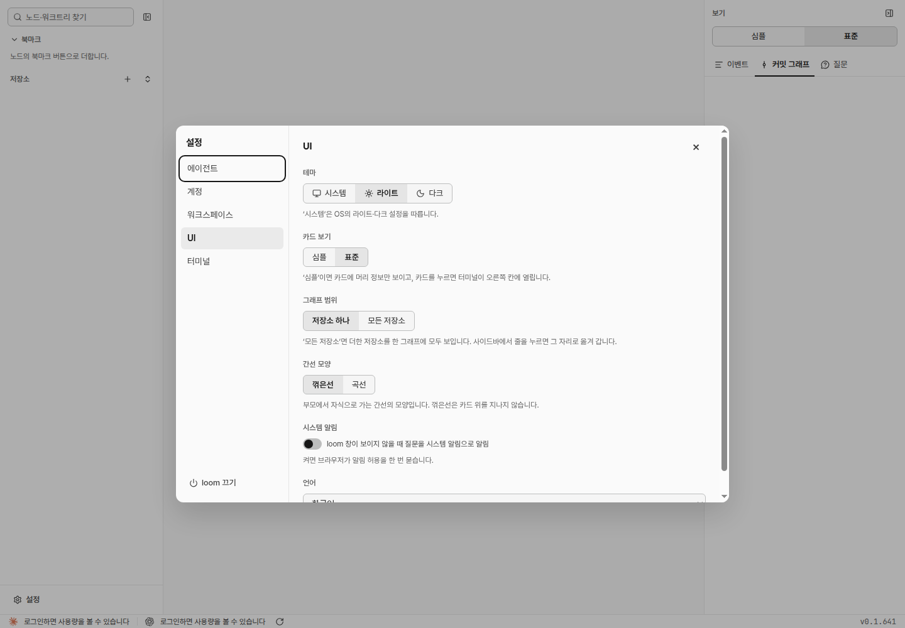

질문2Q12shell-1: 목업을 승인할까요? (A: 승인 / B: 수정, 권장: A)
loom~/src/loom
색설정워크트리
shell-1질문
Q12 in the inbox …
shell-2실행 중
cargo test …
사람 지시: 「목업에 색 선택화면 추가」(v3). 「관계선, 저장소, 워크트리 색 지정 옵션도 추가」(v2). 처음 지시: 「설정에서 ui 색 자유롭게 바꿀 수 있는 옵션 제공 (예: 질문과 관련된 색을 보라색으로 변경)」. 점선이 바뀌는 곳이다.

Q12 in the inbox …
cargo test …
Q12 in the inbox …
cargo test …
| 정할 것 | 권장 | 다른 안 |
|---|---|---|
| 고를 수 있는 색 | 뜻 8개(질문·응답 대기, 실행 중, 완료·성공, 오류, 관계선, 저장소, 워크트리, 강조) | 질문 색 하나만 / 바탕·글자까지 모두 |
| 라이트·다크 색 | 한 번 고르고 밝기는 자동 | 테마마다 따로 고른다 |
| 색 고르기 창 | loom 작은 창(추천 색 8개, 색 값 입력, [직접 고르기]로 브라우저 창, [기본값]) | 브라우저 기본 색 창만 연다(모양이 브라우저마다 다르고 기본값·대비 표시가 없다) |
| 되돌리기 | 줄마다 [기본값] | 묶음 전체 [모두 기본값]도 둔다 |